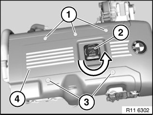
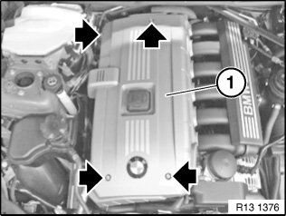

<!DOCTYPE html>
<html>
  <head>
    <title>Access Cover: Service and Repair — 2011 BMW 128i Coupe (E82) L6-3.0L (N52K) Service Manual | Operation CHARM</title>
    <meta name='description' content="Detailed repair manual for the 2011 BMW 128i Coupe (E82) L6-3.0L (N52K).">
    <link rel='stylesheet' href="../style.css">
    <meta name='viewport' content='width=device-width, initial-scale=1.0' />
  </head>
  <body>
    <div class='theme-colors header'>
      <div class='branding'><b>Operation CHARM</b>: Car repair manuals for everyone.</div>
<div class=breadcrumbs><a class='breadcrumb-part' href="../">Home</a> <b>&gt;&gt;</b> <a class='breadcrumb-part' href="../BMW/">BMW</a> <b>&gt;&gt;</b> <a class='breadcrumb-part' href="../BMW/2011/">2011</a> <b>&gt;&gt;</b> <a class='breadcrumb-part' href="../index.html">128i Coupe (E82) L6-3.0L (N52K)</a> <b>&gt;&gt;</b> <a class='breadcrumb-part' href="0.html">Repair and Diagnosis</a> <b>&gt;&gt;</b> <a class='breadcrumb-part' href="0.html#Engine%2C%20Cooling%20and%20Exhaust/">Engine, Cooling and Exhaust</a> <b>&gt;&gt;</b> <a class='breadcrumb-part' href="0.html#Engine%2C%20Cooling%20and%20Exhaust/Engine/">Engine</a> <b>&gt;&gt;</b> <a class='breadcrumb-part' href="284.html">Access Cover</a> <b>&gt;&gt;</b> <a class='breadcrumb-part' href="9205.html">Service and Repair</a></div></div>
<div class="theme-colors floaty-message lemon-message">
  <b style="font-size: 1.5em; color: gold">Manuals through 2025 now available!</b>
  <br><br>
  Our trusted friends have launched a new website named LEMON, which has newer manuals. It also contains all the CHARM manuals.
  <br><br>
  LEMON is the spiritual successor to  CHARM, I recommend you try it!
  <br><br>
  Link: <a style='white-space: nowrap' href="../missing-page">lemon-manuals.la</a> or <a style='white-space: nowrap' href="../missing-page">lemon-manuals.org.ua</a>
  <br><br>
  (Some people have issue connecting. LEMON is investigating. For now, use Firefox or change your DNS server)
  <br><br>
  Or, hide this message: <a href="../missing-page">temporarily</a> or <a href="../missing-page">permanently</a>
</div>
<div class='main'>
<h1>Access Cover: Service and Repair</h1><b>11 00 ... Removing and installing/replacing acoustic cover (N52/N52K)</b><br><br><div class='oxe-image'></div><br><br><br><br><span class='indent-2'>&#09;</span><b>Important!</b><br><span class='indent-5'>&#09;</span>Aluminum-magnesium materials.<br><span class='indent-5'>&#09;</span>No steel screws/bolts may be used due to the threat of electrochemical corrosion.<br><span class='indent-5'>&#09;</span>A magnesium crankcase requires aluminum screws/bolts exclusively.<br><span class='indent-5'>&#09;</span>Aluminum screws/bolts must be replaced each time they are released.<br><span class='indent-5'>&#09;</span>Aluminum screws/bolts are permitted with and without color coding (blue).<br><span class='indent-5'>&#09;</span>For reliable identification:<br><span class='indent-5'>&#09;</span>Aluminum screws/bolts are not magnetic.<br><span class='indent-5'>&#09;</span>Jointing torque and angle of rotation must be observed without fail (risk of damage).<br><br><span class='indent-2'>&#09;</span>Unfasten screws (1 and 3).<br><br><span class='indent-2'>&#09;</span>If necessary, release oil cap (2) in direction of arrow.<br><br><div class='oxe-image'></div><br><br><br><br><span class='indent-2'>&#09;</span>Lift off acoustic cover (4)<br><br><div class='oxe-image'></div><br><br><br><br><span class='indent-2'>&#09;</span><b>Necessary preliminary tasks:</b><br><span class='indent-2'>&#09;</span>^<span class='indent-5'>&#09;</span>Remove microfilter housing<br><span class='indent-2'>&#09;</span>^<span class='indent-5'>&#09;</span>Remove tension strut<br><br><span class='indent-2'>&#09;</span>Release screws.<br><br><span class='indent-2'>&#09;</span>Tightening torque 11 12 7AZ.<br><br><span class='indent-2'>&#09;</span>Remove acoustic cover.<br><br><span class='indent-2'>&#09;</span><b>Note:</b><br><span class='indent-2'>&#09;</span>For purposes of improved clarity, illustration and descriptions shows wiring harness and tension strut removed.<br><br><br><h3>�
u:</h3><div class='oxe-image'></div><br><br><br></div>
<div class="theme-colors footer">
  <i>pro multis</i> · <a href="../about.html">About Operation CHARM</a>
</div>
<script src="../script.js"></script>
</body>
</html>
